Open-Science,
une expérience sur GitHub
Dan Chaltiel
Team Oncostat, Gustave Roussy
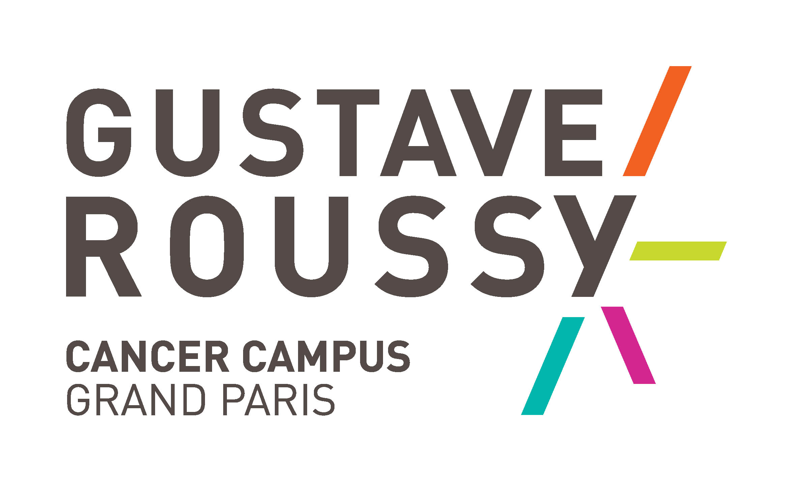 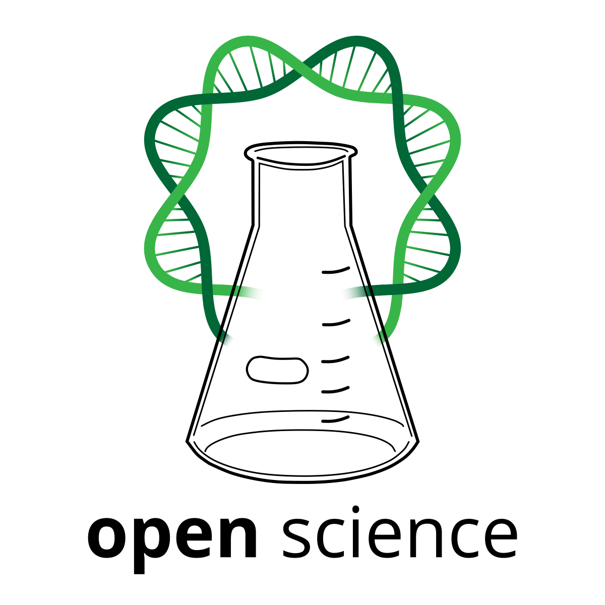  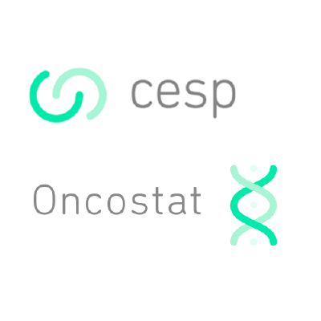
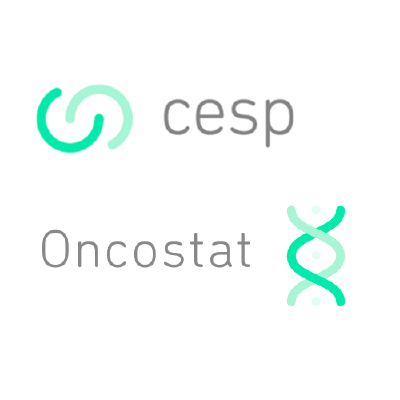
Open science
Petite introduction
Définition INSERM 2019 (lien)
La science ouverte, ou open science, est un mouvement dont l’objectif est de rendre universellement accessibles les résultats de la recherche scientifique (publications et données de recherche, notamment).
But: publier avec l’article les données et le code d’analyse, de manière à ce que n’importe qui puisse reproduire nos résultats.
Fakemed
On entend de plus en plus parler de fraudes et publications falsifiées.
Beaucoup de lanceurs d’alerte, quelques retraits d’articles, très peu de mesures disciplinaires…
“Paper mills”, les industries des fausses publications (plus d’infos dans nature, mdpi, lqdm, …)
Pas forcément de la malhonnêteté : le publish or perish pousse à publier vite. Prendre le temps de tout vérifier n’est pas valorisé partout.
Fakemed
Quand partager les données et le code d’analyse avec un article sera la norme,
il sera plus compliqué de falsifier les études.
on se rendra compte plus vite d’éventuelles erreurs et biais dans les études.
Video
BONUS: même sans erreurs, il y a les problèmes inhérents à la méthode scientifique : risques alpha/beta, biais multiples…
Elisabeth Bik
Suivez Elisabeth Bik sur tweeter! @MicrobiomDigest
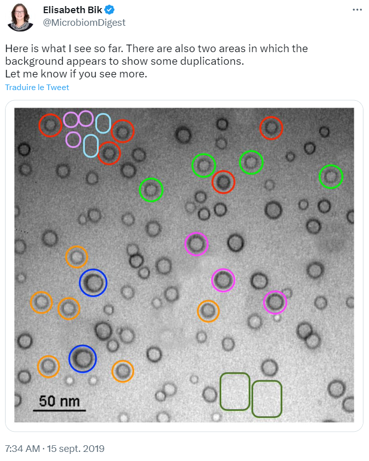
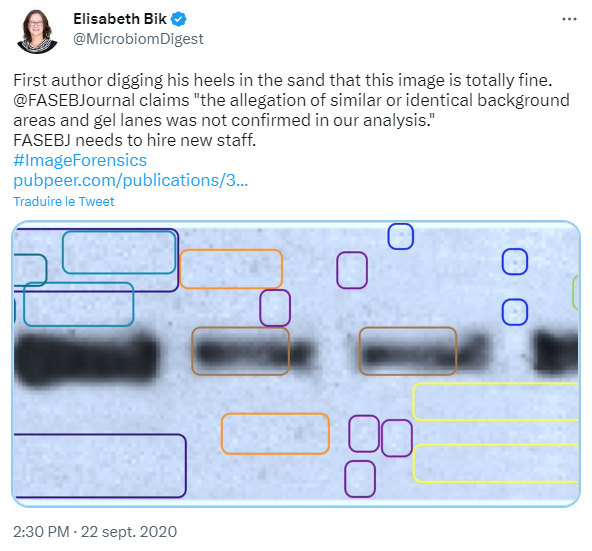
Git et GitHub
Enfin, on y vient!
Définitions
GitHub est une plateforme d’hébergement de code pour la gestion de versions et la collaboration. Cette plateforme vous permet de travailler avec d’autres personnes sur des projets depuis n’importe où. (source)
En pratique, GitHub est un Hub de dépots Git.
Commençons déjà par expliquer ce qu’est Git.
Git
Git est un système de contrôle de version (VCS).
Imaginons un projet contenant des données, du code, des figures, des rapports…
Git va permettre de faire des “photographies” du projet à un instant
t, appelé commits.Chaque commit est ajouté à une base de données interne.
On peut synchroniser cette base de données à un serveur centralisé (e.g. GitHub).
Commits
Chaque commit contient l’information de tous les fichiers changés (diff), l’auteur, et une petite description des changements.
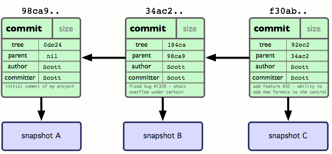
Git en pratique
Parce que j’imagine que c’est encore un peu flou…
Mise en place
On va avoir besoin de plusieures choses :
- Un dossier “racine” local qui contient la totalité du projet
- Une interface d’édition : Notepad++, PyCharm, RStudio…
- Avoir installé Git (lien ici)
- Une interface graphique pour Git
Exemple
Prenons l’exemple de mon package crosstable pour R.
Git client
Les puristes utilisent Git en ligne de commande, mais nous on va utiliser un logiciel avec une GUI.
Ici, j’utilise GitHub Desktop :
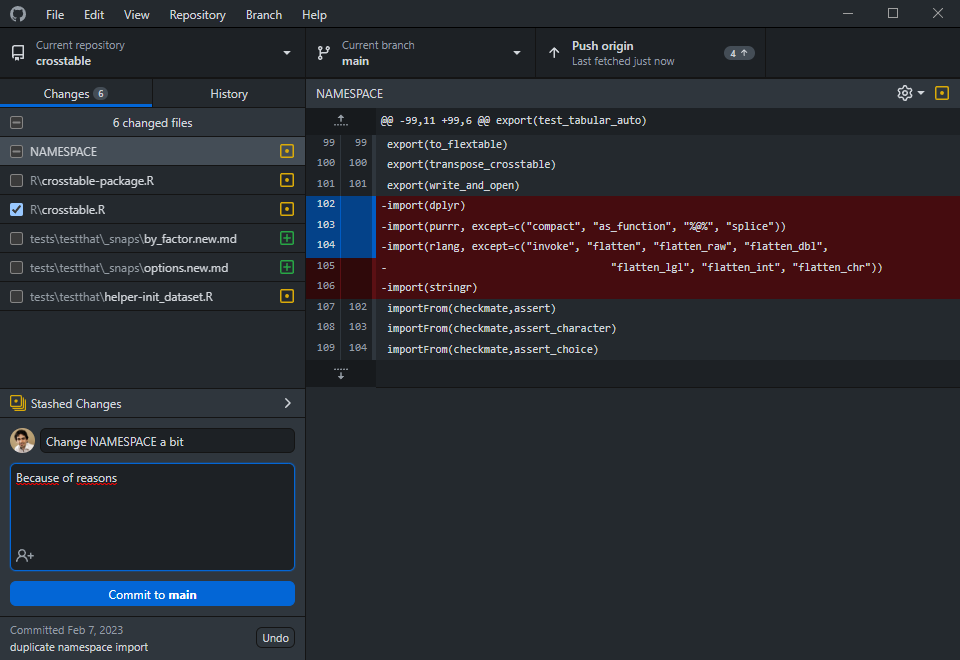
Cas pratique : setup
Petit cas pratique d’utilisation :
J’en suis au 855ème commit sur mon projet
crosstable.J’ai fait quelques modifications sur RStudio
Ces modifications concernent deux points : le fichier
NAMESPACEet les testsOn va aller sur GitHub Desktop pour faire un commit.
Cas pratique : Commit & Push
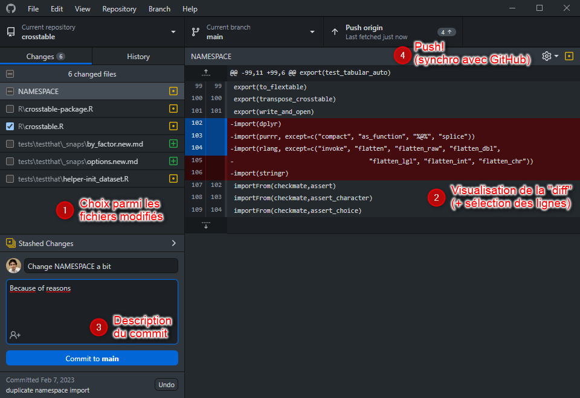
Cas pratique : Historique
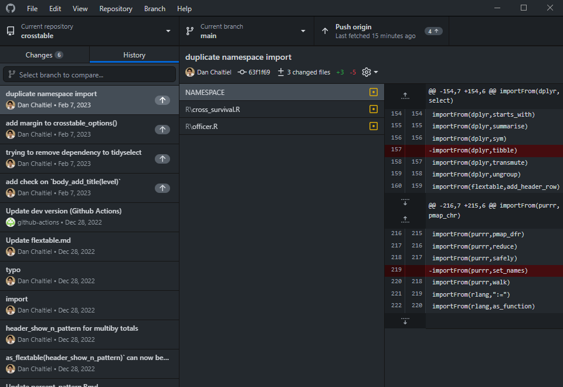Remote (GitHub web)
Dépot centralisé de mes commits (si pushed), ici hébergé sur https://github.com:
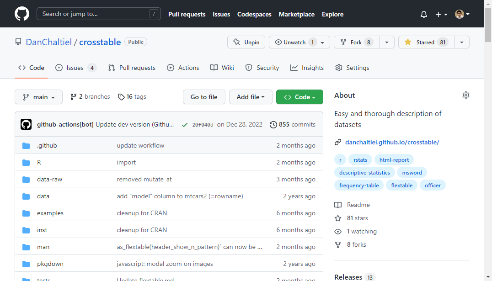Conclusion sur Git
Git permet de gérer les versions
Evite d’avoir 6 copies de
projet_v3_final_pour_de_vrai_cette_foisUtile pour les petits et les grands projets
Grâce à GitHub, on va pouvoir publier nos codes et utiliser Git dans des projets collaboratifs.
Travail collaboratif
Github est surtout un formidable outil de collaboration, particulièrement adapté à l’encadrement.
Espace collaboratif
En plus du versionning, GitHub c’est :
Un outil de partage de code
Mais c’est surtout un espace collaboratif très puissant :
- Entre programmeurs
- Avec les utilisateurs
Pas forcément open-source (on peut garder un repo private)
Collab
Conflits
Si deux personnes travaillent en parallèle à partir du même commit, on peut résoudre les conflits très facilement.
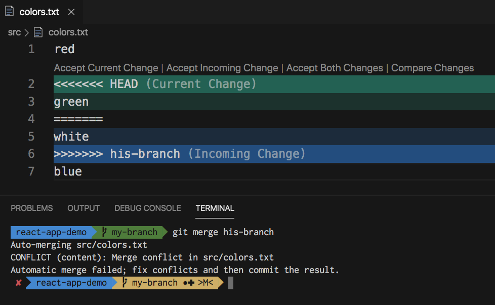
Readme
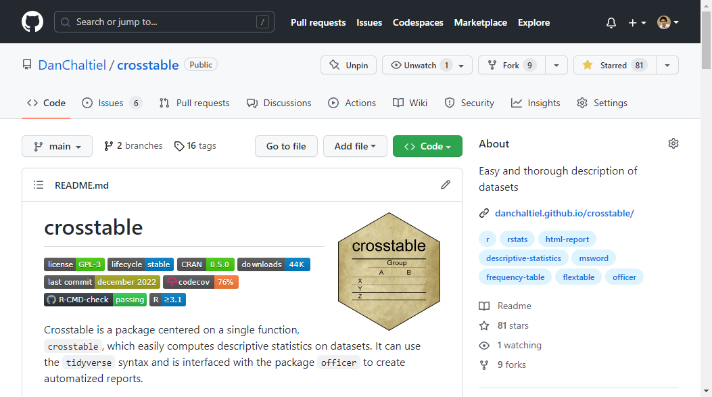Issues
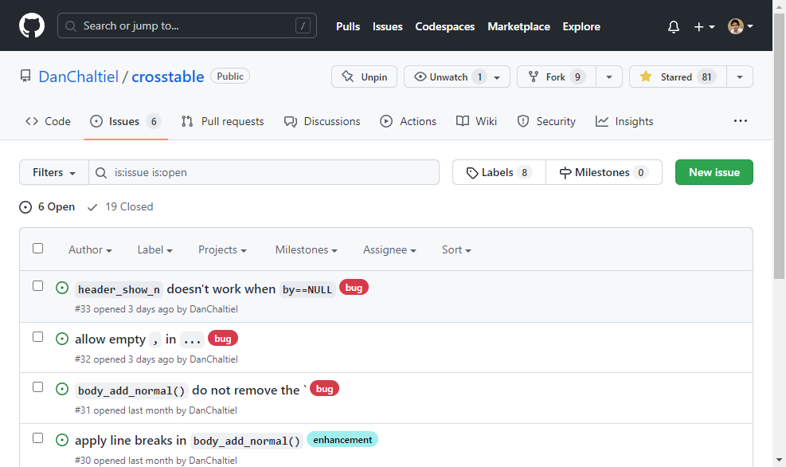Pull-requests
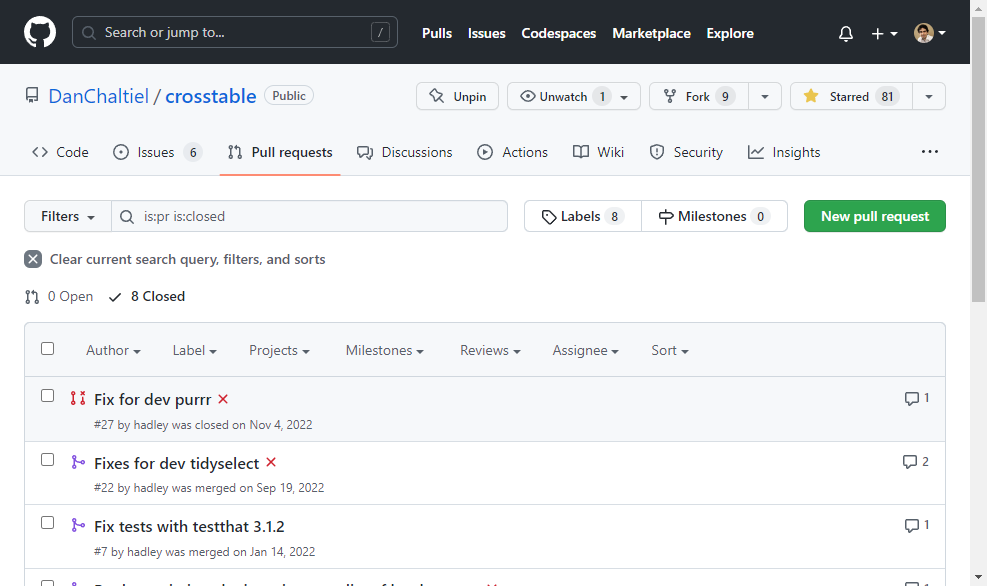Actions
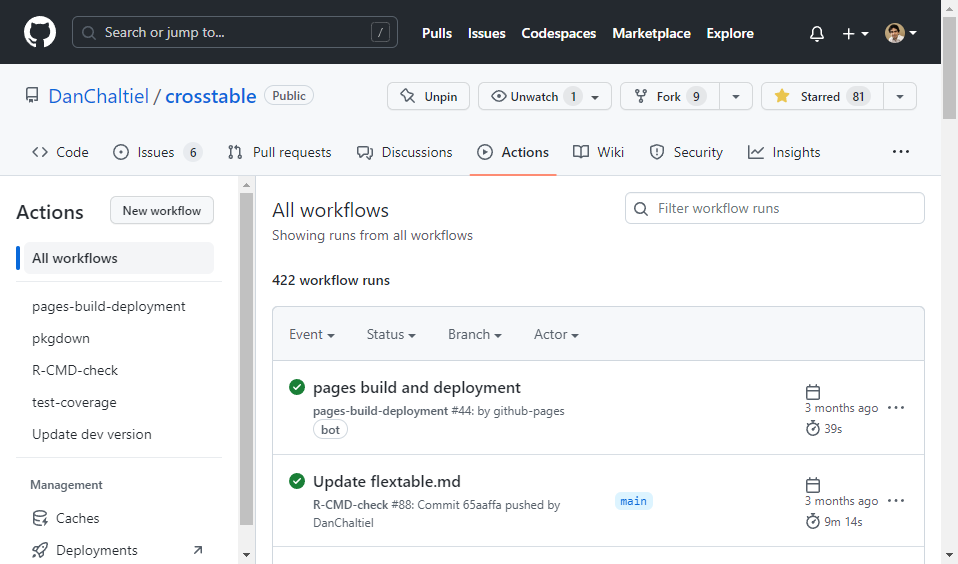Actions (simulations)
Projet : faire ses simulations sur GitHub
6h par job, 35 jours par workflow, 20 jobs en parallèle
queue de 500 workflows
job matrix de max 256 jobs
Encore plus avec un compte pro (lien)
Documentation website
Questions ouvertes
Confidentialité des bases de données, RGPD ?
Modération des
issuesUtiliser GitHub plutôt que GitLab, FramaGit, …
- Un jour une solution indépendante ?
Software Heritage
We collect and preserve software in source code form, because software embodies our technical and scientific knowledge and humanity cannot afford the risk of losing it.
Collecte massive sur GitHub, permet l’archivage pérenne des codes sources.
Non exhaustif : s’inscrire ici pour s’assurer que son code est sauvegardé.
Merci de votre attention
N’hésitez pas si vous avez des questions.
Tags/Releases
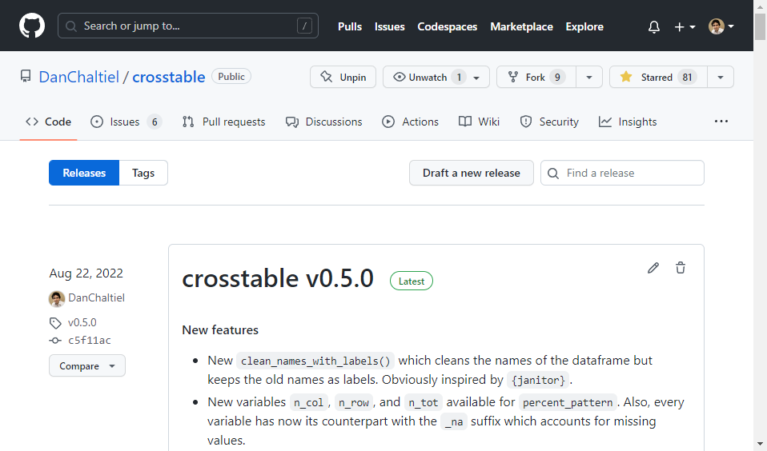Blame
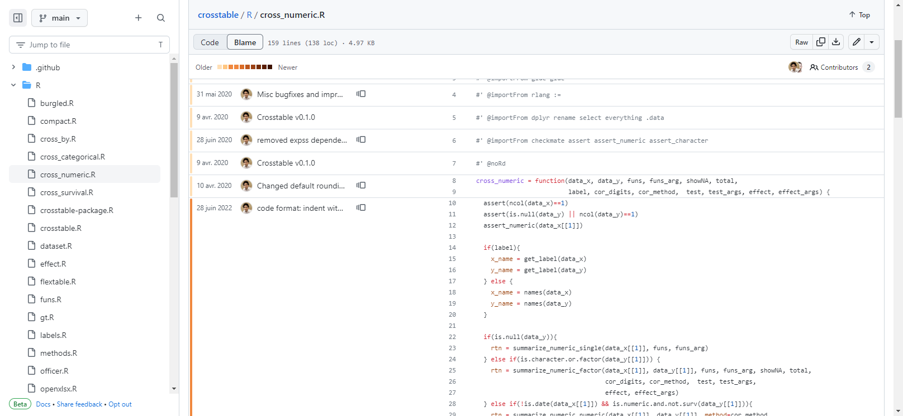Le code source de cette présentation est disponible sur GitHub.